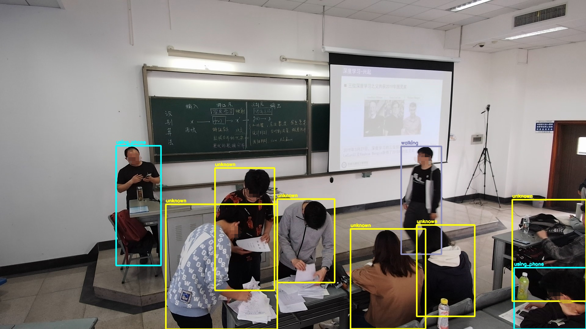
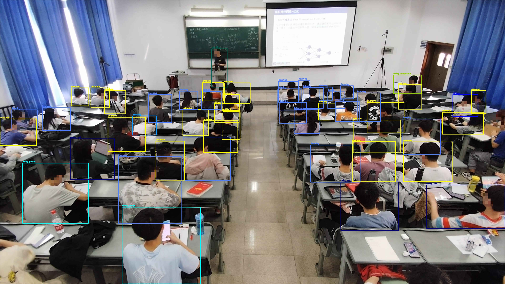
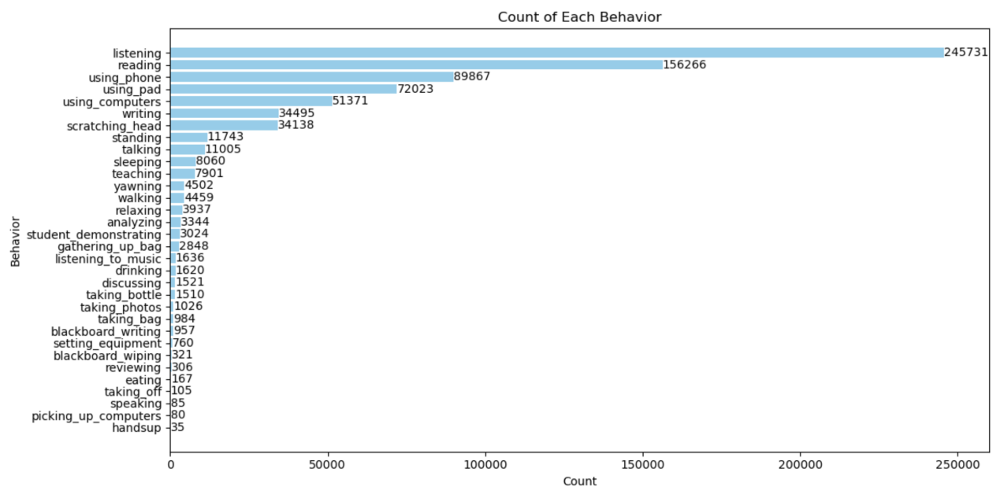

The Overview of ARIC
ARIC (Activity Recognition in Classroom) is a brand-new and challenging dataset,capturing real classroom scenarios from three different perspectives: front, middle, and rear,
|  |  |  |
| mid perspective | rear perspective | front perspective |
each equipped with high-definition 4K cameras. From these videos, images were extracted and annotated to depict the behaviors of students and teachers as the image modality.
Additionally, the audio modality comprises 10 seconds of audio extracted from the videos, 5 seconds before and after each image, we have also preserved the original captions of the images as the text modality.
The dataset, named the ARIC, encompasses classroom-themed scenarios, rich modalities, various perspectives,and an imbalanced class distribution.
Its complexity, diverse behaviors, and crowded scenes present significant challenges.Each modality in the current version consists of 36,453 samples, with a total of 32 annotated behaviors,
covering common behaviors of both teachers and students. The distribution of behaviors can be seen in the below. There is a significant variation in the number of instances for different behaviors.
|  |
| distribution of activities |
Continual Activity Recongnition
For the continual learning evaluation, we present a set of settings of incremental steps,
i.e., the 32 classes are divided into 7 incremental steps and each step contains {8, 4, 4, 4, 4, 4, 4} activity classes,
and you may find more flexible setting in the Readme.md.Download ARIC Dataset
Baidu Drive: ARIC
Dropbox (published via ORANGEDOX): ARIC
Usage License: All files in the ARIC dataset
To protect the privacy of individuals appearing in the images, we refrain from publishing the original pictures.
Instead, we share annotated class-instance images extracted from the original pictures using pre-trained models' shallow features.
for three pre-trained model, you can choose one and download specified image_features, and you may find more detailed introduction in the Readme.md
The directory structure of the ARIC dataset is as follows:
ARIC-dataset/
index/
├── train/
│ ├── train_0.txt
│ ├── train_1.txt
│ └── ...
├── test/
│ ├── test_0.txt
│ ├── test_1.txt
│ └── ...
image_features/
├── vit
├── clipvit
└── resnet
audio/
├── wav_00001.wav
├── wav_00002.wav
└── ...
text/
├── 00001.txt
├── 00002.txt
└── ...
Readme.md
Note for data files
For your convenience in utilizing our dataset, we also provide a dataloader.
It comes with preset task configurations, which can be controlled by passing parameters to specify the data sources and task settings you wish to access.
Due to space limitations, please refer to the ReadMe.md of ARIC-dataset for more details about dataloader.
If you have any questions, please contact us.
Citation
If you find the ARIC dataset useful in your research, please consider citing:
@misc{qian2024fewshotcontinuallearningactivity,
title={Few-Shot Continual Learning for Activity Recognition in Classroom Surveillance Images},
author={Yilei Qian and Kanglei Geng and Kailong Chen and Shaoxu Cheng and Linfeng Xu and Hongliang Li and Fanman Meng and Qingbo Wu},
year={2024},
eprint={2409.03354},
archivePrefix={arXiv},
primaryClass={cs.CV},
url={https://arxiv.org/abs/2409.03354},
}